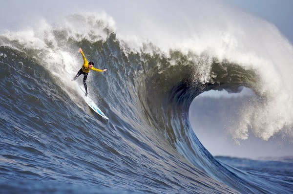

Graphics
Questions
1. What kind of photos are good to encode using JPEG?
JPG are good for real life photos. They are good for compressing.
2. What kind of photos are good to encode using GIF?
GIFs are good for animations such as cartoons and logos. GIFs are, however, not good with images with a lot of colors.
3. What is unique about the PNG format?
PNG not only has the normal RGB channels, but also has a fourth channel known as the "Alpha" channel, that can encode transparency to have empty spaces within the pictures.
4. How do you resize your photo to the size it should be displayed?
You can either go into CSS and create a class that edits the height/width of pixels in the image, or you can edit the picture using an outside editing porgram and inserting the resized photo.
5. Why should you resize photos using photo editing software instead of resizing it using CSS?
You would resize photos using editing software instead of resizing it in CSS because running less lines of code is more efficient and more user friendly as you don't have to run unnecessary code in the background, not only saving batter usage but also data space.